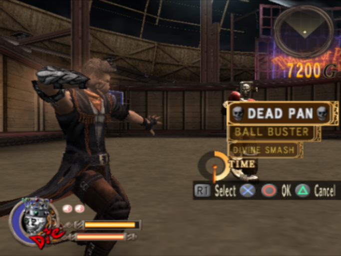
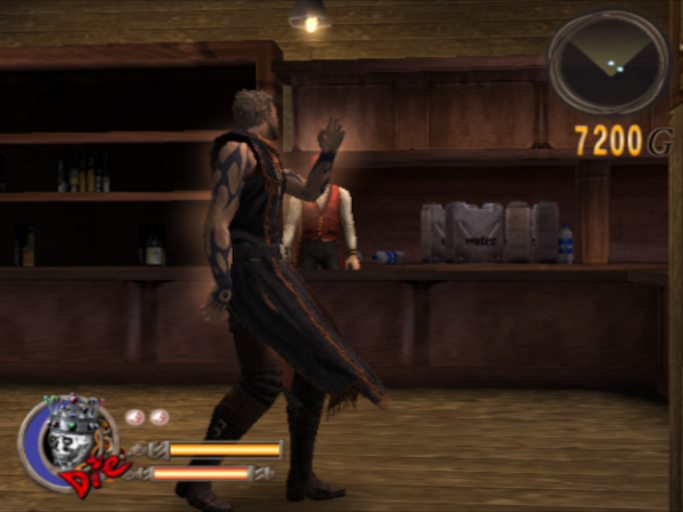
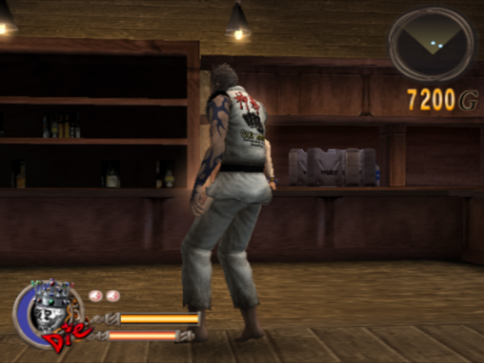
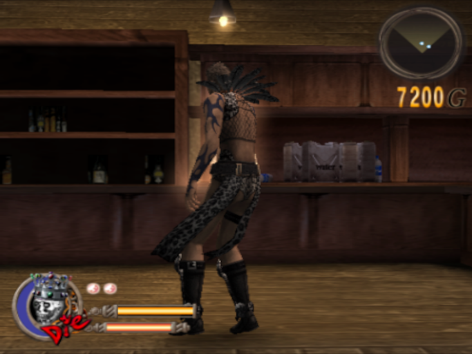
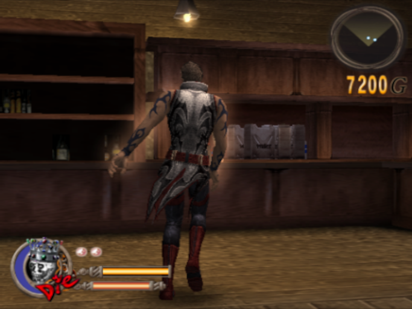

- Final Release (NTSC-U) = 6FB69282.pnach
- Final Release (NTSC-J) = AEDAEE99.pnach
- Final Release (PAL-E) = DE9722A5.pnach
Enable the cut Roulette technique from NTSC-J version called "DEAD PAN".
All costumes give Double God Hands instead of one.
   